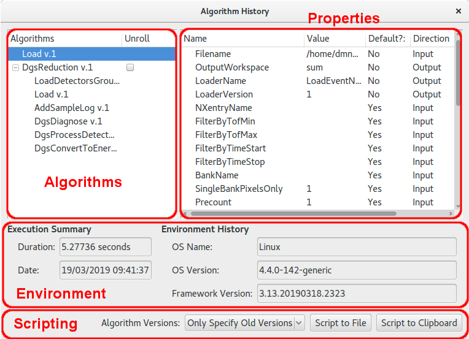

Workspace History Window#
This window displays the algorithm history attached to a selected workspace. The window is accessed by right clicking the workspace name in the Workspace Toolbox and selecting “Show History”.

Algorithms#
The algorithms box displays the list of algorithms, in order, as they were executed on the workspace. Some types of algorithms, known as workflow algorithms, also record the algorithms they use internally. These algorithms are initially displayed having just the parent algorithm in the list but with an option to expand the tree next to the item. Clicking this item displays an indented list of the child algorithms used by this step.
The “Unroll” check box will also appear next to workflow algorithms. This option is used in conjunction with the options in the scripting section.
Properties#
Clicking on an algorithm from the algorithms box updates the “Properties” tree with the values of the inputs and outputs captured when the algorithm was executed.
Environment#
This section displays information regarding the execution data and duration of an algorithm when highlighted in the list. It also displays a information regarding the OS and version of mantid used to execute the algorithm.
Scripting#
The scripting section allows a Python script to be generated from the history of the workspace. “Script To File” will request a name and directory for where to save the script whereas “Script to Clipboard” will copy the script to the system clipboard.
When generating the script there are several options undre “Algorithm Versions” that control how the calls to algorithms will look in the generated script:
Only specify Old Versions: will cause a
Version=argument to be given when calling an algorithm in the cases where the version of the algorithm executed is older than the current highest versionNever Specify Versions: will not append any
Version=arguments in any algorithm calls in the scriptAlways Specify Versions: will specify a
Version=argument for each algorithm call in the generated script with the version to match the version that was executed in the history.
Unrolling#
When a workflow algorithm appears in the history the user is offered a check box next to the algorithm within the list box that is
marked Unroll. Checking this box and clicking either of the “Script to…” options will the cause the generated script to
display the list of child algorithms rather than a single call to the parent algorithm. For example, in the case of the example
in the screen shot above, the generated scripts would produce
Load(Filename='/tmp/data/CNCS_23936_event.nxs+/tmp/data/CNCS_23937_event.nxs', OutputWorkspace='sum')
DgsReduction(SampleInputWorkspace='sum', EnergyTransferRange='-0.2,0.05,2.2', GroupingFile='CNCS_powder_group.xml', IncidentBeamNormalisation='ByCurrent', TimeIndepBackgroundSub=True, TibTofRangeStart=42648.741698242302, TibTofRangeEnd=45048.741698242302, DetectorVanadiumInputFile='/home/dmn58364/Code/mantidproject/mantid/builds/debug/ExternalData/Testing/Data/SystemTest/CNCS_51936_event.nxs', SaveProcessedDetVan=True, SaveProcDetVanFilename='/home/dmn58364/Code/mantidproject/mantid/builds/debug/van.nx5', UseBoundsForDetVan=True, DetVanIntRangeLow=52000, DetVanIntRangeHigh=53000, DetVanIntRangeUnits='TOF', OutputWorkspace='reduced')
when Unroll is not checked and
Load(Filename='tmp/data/CNCS_23936_event.nxs+/tmp/data/CNCS_23937_event.nxs', OutputWorkspace='sum')
# Child algorithms of DgsReduction
LoadDetectorsGroupingFile(InputFile='CNCS_powder_group.xml', OutputWorkspace='__TMP0x1643e400')
Load(Filename='/tmp/data/CNCS_51936_event.nxs', OutputWorkspace='__TMP0x105f1000')
AddSampleLog(Workspace='__TMP0x105f1000', LogName='Filename', LogText='/tmp/data/CNCS_51936_event.nxs')
DgsDiagnose(DetVanWorkspace='__TMP0x105f1000', SampleWorkspace='sum', OutputWorkspace='__TMP0x19148d20')
DgsProcessDetectorVanadium(InputWorkspace='__TMP0x105f1000', MaskWorkspace='__TMP0x19148d20', OutputWorkspace='__TMP0xde82400')
DgsConvertToEnergyTransfer(InputWorkspace='sum', IntegratedDetectorVanadium='__TMP0xde82400', MaskWorkspace='__TMP0x19148d20', OutputWorkspace='reduced', OutputTibWorkspace='__TMP0x628bf400')
# End of child algorithms of DgsReduction
when Unroll is checked. Please note that the exact values of some of the workspace inputs will not match exactly when run on your
own machine. This is expected.